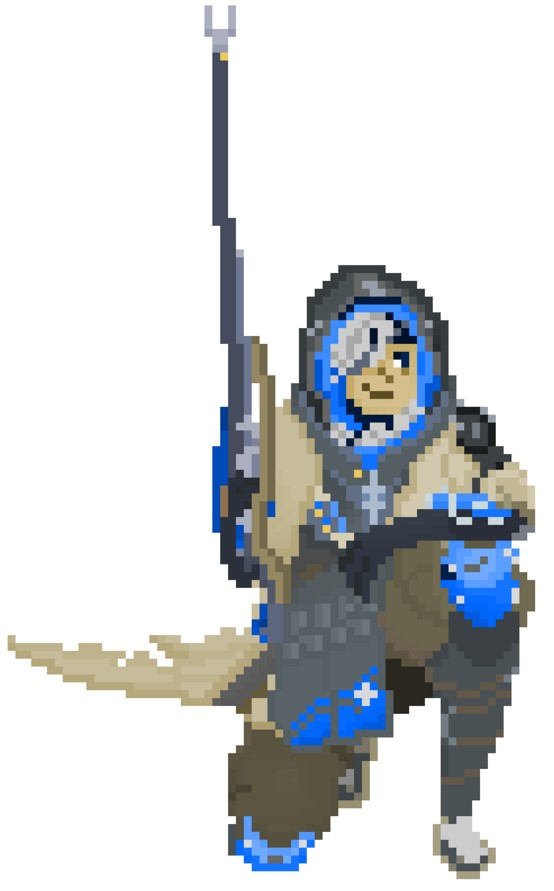

Most people know me as Ellie as a lot of people have trouble pronouncing Aniela. I am currently majoring in Computer Science. I find psychology and astronomy interesting and am hoping to minor in psychology. My free time is usually making art, skateboarding or running, and programming. A lot of programming comes from classes as I am taking 3 programming classes currently but I try to do some for fun in between school work.
What I enjoy doing the most is digital art. Here are three different examples of art I have made recently:
